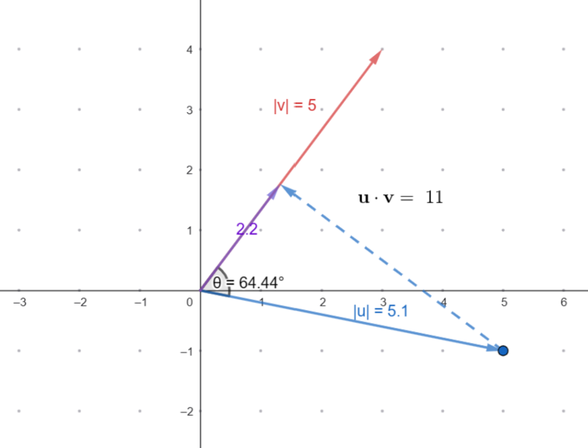
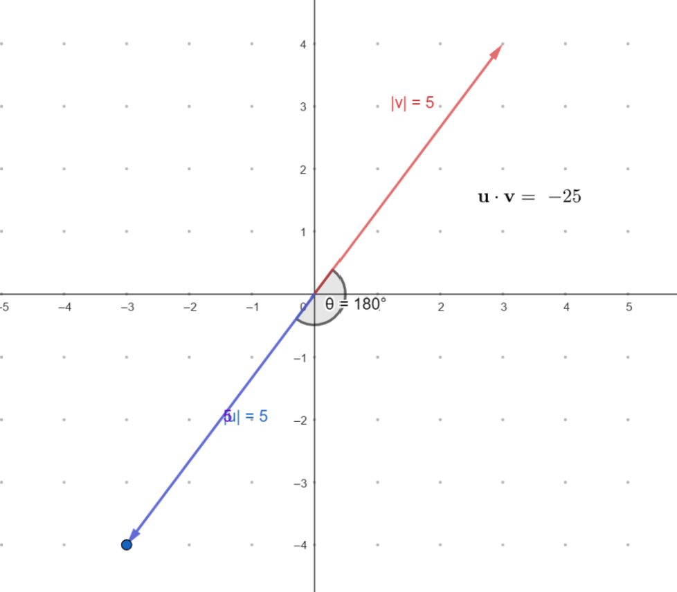
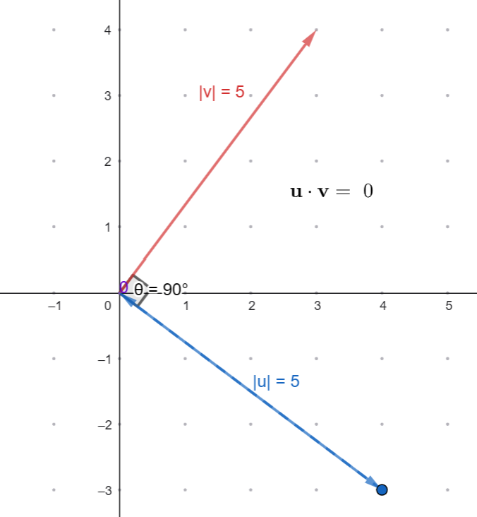
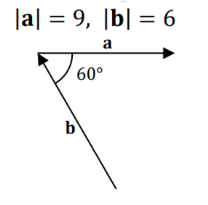
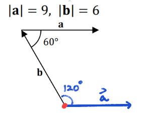
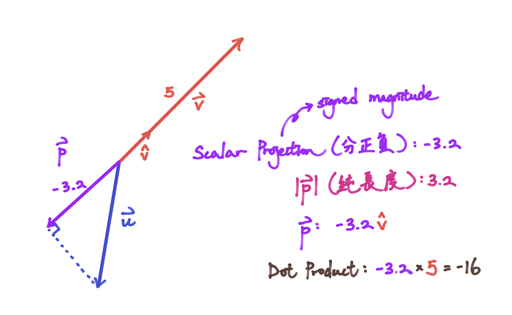

點積 Dot Product
1 向量的乘法 Product of Vectors
問吓你，$2x$, $2 \cdot x$ 同 $2 \times x$ 有咩分別？
："阿 sir 你唔好咁弱智啦。呢三嚿嘢唔係完全一樣咩？"
如果你真係咁諗，咁你就...啱啦！證明你有讀小學。

咁 $2\mathbf{x}$, $2 \cdot \mathbf{x}$ 同 $2 \times \mathbf{x}$ 有無分別？
："阿 sir 你唔好咁弱智啦。呢三嚿嘢唔係完全一樣咩？"
如果你真係咁諗，咁你就...錯啦！證明你無讀M2。
係 vector 嘅世界入面，"$\cdot$"，"$\times$"，同直接擺埋一齊，係三種完全唔一樣嘅操作！
唔同嘅寫法，完全唔一樣嘅結果
-
$k \mathbf{v}$：呢個叫做純量乘法 Scalar Multiplication。我哋上次學過啦。
條件係 scalar 乘 vector，乘完出嚟會係一個 vector。 -
$\mathbf{a} \cdot \mathbf{b}$：呢個叫點積 Dot Product。
條件係 vector 乘 vector，乘完出嚟會變返一個 scalar！ -
$\mathbf{a} \times \mathbf{b}$：呢個叫叉積 Cross Product。
條件係 vector 乘 vector，乘完出嚟會係一個同 $\mathbf{a}，\mathbf{b}$ 垂直嘅 vector！
所以喺 $2\mathbf{x}$, $2 \cdot \mathbf{x}$ 同 $2 \times \mathbf{x}$ 入面，得 $2\mathbf{x}$ 係有意思嘅。$2 \cdot \mathbf{x}$ 同 $2 \times \mathbf{x}$ 嘅結果都會係 undefined！（因爲 $2$ 唔係 vector）
Is $\mathbf{a} \mathbf{b}$ defined if $\mathbf{a}$ and $\mathbf{b}$ are vectors?
2 點積 Dot Product
如果你要我講咩係 dot product，我會話佢係一個"跟方向嘅乘法"。
下面有兩支 vector $\mathbf{u}$ 同 $\mathbf{v}$。試吓通過改變 $\mathbf{u}$，睇吓個 dot product $\mathbf{u} \cdot \mathbf{v}$ 會點樣改變？
你又估唔估到我所講嘅"跟方向嘅乘法"係咩意思？
Dot product 睇嘅係「你有幾多力量去咗我嘅方向」。上面紫色嘅部分，就係藍色 vector $\mathbf{u}$ 喺紅色 vector $\mathbf{v}$ 嘅方向出嘅力。
所以 $\mathbf{u} \cdot \mathbf{v}$ 嘅數值，其實就係「紫色嘅有向長度」 $\times$ 「紅色長度」！

留意返，紫色嘅部分等於 $|\mathbf{u}| \cos \theta$。所以我哋可以好數學咁 define dot product：
The dot product of two vectors $\mathbf{u}$ and $\mathbf{v}$ is defined as:
$$\mathbf{u} \cdot \mathbf{v} = |\mathbf{u}| |\mathbf{v}| \cos \theta$$ where $\theta$ is the angle between the vectors.分歧 (夾角 $\theta$) 越大，反映「兩個人有幾 match」嘅紫色部分就越短，最終乘出嚟嘅效果就越細。
如果兩個人係宿敵 ($\theta = 180^\circ$)，一個係正義英雄，另一個墮入黑暗，閲番無數嘅你我都知道其實佢哋嘅情感牽絆反而係最深！$\mathbf{u}$ 做咁多嘢，全部都係為了與 $\mathbf{v}$ 對抗而存在...
恨（愛）意爆表，得出嚟嘅結果就會係一個最大嘅負數啦。

如果兩個人前進方向完全唔同 ($\theta = 90^\circ$)，無論 $\mathbf{u}$ 喺自己條路行得幾精彩、變得幾強大，喺 $\mathbf{v}$ 嘅世界入面，$\mathbf{u}$ 留低嘅情感投影長度係「零」。

如果彼此心情一致 ($\theta = 0^\circ$)，乘出嚟就係最大值，二人發揮最大嘅力量！

Let $\mathbf{a} = (3,3)$ and $\mathbf{b} = (5,0)$ be two vectors. It is given that the angle between them is $45^\circ$. Find $\mathbf{a} \cdot \mathbf{b}$.
Solution $$\mathbf{a} \cdot \mathbf{b} = |\mathbf{a}| |\mathbf{b}| \cos \theta$$ $$=(\sqrt{3^2 + 3^2}) (\sqrt{5^2 + 0^2}) \cos 45^\circ$$ $$=15$$Find the dot product in the following.

SolutionNote that the angle between two vectors is defined when they are placed tail-to-tail.
By moving $\mathbf{a}$'s tail to $\mathbf{b}$'s tail, notice that the angle is $120^\circ$ instead of $60^\circ$.

Hence, $\mathbf{a} \cdot \mathbf{b} = (9)(6) \cos 120^\circ = -27.$
Let $\mathbf{u}$ and $\mathbf{v}$ be two vectors with $|\mathbf{u}| = 4$ and $\mathbf{v}=-3\mathbf{u}$. Find $\mathbf{u} \cdot \mathbf{v}$.
點積的性質 Properties of Dot Product
雖然下面有7個 properties 咁多，不過其實要記得嘅都係第一個！其他嘅都可以靠直覺或者推出嚟~唔需要特別記的。
For any vectors $\mathbf{a}$, $\mathbf{b}$, $\mathbf{c}$ and scalar $\lambda$, we have:
- (i) $\textcolor{red}{\mathbf{a} \cdot \mathbf{a} = |\mathbf{a}|^2 \geq 0}$
- (ii) $\mathbf{a} \cdot \mathbf{a} = 0$ if and only if $\mathbf{a} = \mathbf{0}$
- (iii) $\mathbf{a} \cdot \mathbf{b} = \mathbf{b} \cdot \mathbf{a}$ (commutative property)
- (iv) $|\mathbf{a} \cdot \mathbf{b}| \leq |\mathbf{a}| \, |\mathbf{b}|$ (Cauchy–Schwarz inequality)
- (v) $(\lambda \mathbf{a}) \cdot \mathbf{b} = \mathbf{a} \cdot (\lambda \mathbf{b}) = \lambda (\mathbf{a} \cdot \mathbf{b})$
- (vi) $\mathbf{a} \cdot (\mathbf{b} + \mathbf{c}) = \mathbf{a} \cdot \mathbf{b} + \mathbf{a} \cdot \mathbf{c}$ (distributive property)
- (vii) $|\mathbf{a} - \mathbf{b}|^2 = |\mathbf{a}|^2 + |\mathbf{b}|^2 - 2(\mathbf{a} \cdot \mathbf{b})$ (Cosine Law)
The angle between $\mathbf{a}$ and itself is $0$, so
$$ \mathbf{a} \cdot \mathbf{a} = |\mathbf{a}| \, |\mathbf{a}| \cos 0 = |\mathbf{a}|^2 $$Since $|\mathbf{a}|$ is a real number, we have
$$ |\mathbf{a}|^2 \geq 0 .$$Since $|\cos \theta| \leq 1$ for any angle $\theta$, we have
$$ |\mathbf{a} \cdot \mathbf{b}| = |\mathbf{a}| \, |\mathbf{b}| \, |\cos \theta| \leq |\mathbf{a}| \, |\mathbf{b}| $$By (iii), $\mathbf{a} \cdot \mathbf{b} = \mathbf{b} \cdot \mathbf{a}$, so
$$ |\mathbf{a} - \mathbf{b}|^2 = |\mathbf{a}|^2 + |\mathbf{b}|^2 - 2(\mathbf{a} \cdot \mathbf{b}) $$3 正交 Orthogonality
頭先講開 Dot Product 嗰陣，當兩支 Vector 嘅夾角係 $90^\circ$ 時，佢哋相乘嘅結果係 $0$。喺幾何學上，呢個叫「垂直（Perpendicular）」。
但當你行入更高階嘅數學領域，數學家會嫌「垂直」呢個詞太過低級，於是佢哋創造咗一個聽落好 Pro、好有科幻感嘅詞——正交（Orthogonal）。
不過大學數學關我哋叉事咩？你内心當返 orthogonal 同 perpendicular 係一樣嘅就得啦！
返返嚟 vectors 度，兩支 vector 幾時垂直呢？咪就係夾角 $90 ^\circ$ 嘅時候囉！
而根據 dot product 嘅 definition，呢個情況 $\mathbf{a} \cdot \mathbf{b} = |\mathbf{a}| \ |\mathbf{b}|\cos 90 ^\circ = 0$.
所以我哋可以得出一個結論：如果兩支 vector 垂直，dot product 就會等於 0；如果 dot product 等於 0， 咁就代表兩支 vector 垂直！
Two vectors $\mathbf{u}$ and $\mathbf{v}$ are orthogonal (perpendicular) if and only if $\mathbf{u} \cdot \mathbf{v} = 0$.
直角坐標系中的點積 Dot Product of Vectors in Rectangular Coordinate System
仲記唔記得 $\mathbf{i}, \mathbf{j}, \mathbf{k}$ 三兄弟？
- $\mathbf{i}$ 負責向 $x$ 軸行 $1$ 步。
- $\mathbf{j}$ 負責向 $y$ 軸行 $1$ 步。
- $\mathbf{k}$ 負責向 $z$ 軸行 $1$ 步。
因爲佢哋彼此之間係互相垂直嘅，所以佢哋之間嘅 dot product 一定係 0 ！
$$\mathbf{i}\cdot\mathbf{j} = \mathbf{j}\cdot\mathbf{k} = \mathbf{k}\cdot\mathbf{i} = 0$$而自己 dot 自己會係幾多呢？冇錯，就喺 1 啦~
$$\mathbf{i}\cdot\mathbf{i} = \mathbf{j}\cdot\mathbf{j} = \mathbf{k}\cdot\mathbf{k} = | \mathbf{i}/\mathbf{j}/\mathbf{k} |^2 = 1$$ 運用呢啲知識，我哋可以挑戰一下呢個題目：Let $\mathbf{a} = \mathbf{2i} + \mathbf{3j} + \mathbf{4k}$ and $\mathbf{b} = \mathbf{6i} - \mathbf{4j} - \mathbf{2k}$. Find $\mathbf{a} \cdot \mathbf{b}$.
咪住先？角度都無比，點樣 dot product 呀？
其實我哋唔一定需要個角度先計到㗎~我哋可以徒手爆開佢！
$$(\mathbf{2i} + \mathbf{3j} + \mathbf{4k}) \cdot (\mathbf{6i} - \mathbf{4j} - \mathbf{2k})$$ $$\begin{aligned} = \;& (2)(6)(\mathbf{i} \cdot \mathbf{i}) + (2)(-4)(\mathbf{i} \cdot \mathbf{j}) + (2)(-2)(\mathbf{i} \cdot \mathbf{k}) \\ & + (3)(6)(\mathbf{j} \cdot \mathbf{i}) + (3)(-4)(\mathbf{j} \cdot \mathbf{j}) + (3)(-2)(\mathbf{j} \cdot \mathbf{k}) \\ & + (4)(6)(\mathbf{k} \cdot \mathbf{i}) + (4)(-4)(\mathbf{k} \cdot \mathbf{j}) + (4)(-2)(\mathbf{k} \cdot \mathbf{k}) \end{aligned}$$唔好比佢嚇親先！呢個時候就到我哋上面兩條公式出場啦！自己 dot 自己會變 1，垂直 dot 埋會變 0：
$$\begin{aligned} = \;& 12(1) + (-8)(0) + (-4)(0) \\ & + 18(0) + (-12)(1) + (-6)(0) \\ & + 24(0) + (-16)(0) + (-8)(1) \end{aligned}$$最後清理吓戰場，你會發現剩低嘅就係自己 dot 自己個 3 項：
$$= 12 - 12 - 8$$ $$= -8$$所以下次我哋可以直接用「$x$ 乘 $x$ + $y$ 乘 $y$ + $z$ 乘 $z$」嘅快方法，唔需要再慢慢爆！
$$(\mathbf{2i} + \mathbf{3j} + \mathbf{4k}) \cdot (\mathbf{6i} - \mathbf{4j} - \mathbf{2k})$$ $$=(2)(6)+(3)(-4)+(4)(-2)=-8$$Let $\mathbf{a} = x_1\mathbf{i} + y_1\mathbf{j} + z_1\mathbf{k}$ and $\mathbf{b} = x_2\mathbf{i} + y_2\mathbf{j} + z_2\mathbf{k}$ be vectors in $\mathbb{R}^3$. Then
$$ \mathbf{a} \cdot \mathbf{b} = x_1 x_2 + y_1 y_2 + z_1 z_2 $$In $\mathbb{R}^2$, for $\mathbf{a} = x_1\mathbf{i} + y_1\mathbf{j}$ and $\mathbf{b} = x_2\mathbf{i} + y_2\mathbf{j}$, we have
$$ \mathbf{a} \cdot \mathbf{b} = x_1 x_2 + y_1 y_2 $$Let $\mathbf{a} = 2\mathbf{i} - \mathbf{j} + 3\mathbf{k}$ and $\mathbf{b} = \mathbf{i} + 4\mathbf{j} - 2\mathbf{k}$. Find $\mathbf{a} \cdot \mathbf{b}$.
Given $\mathbf{a} = \mathbf{i} + 3\mathbf{j}$ and $\mathbf{b} = -m\mathbf{i} - 2\mathbf{j}$, find $m$ if $\mathbf{a}$ and $\mathbf{b}$ are perpendicular to each other.
Since $\mathbf{a}$ and $\mathbf{b}$ are perpendicular, we have $ \mathbf{a} \cdot \mathbf{b} = 0 $.
$$ \mathbf{a} \cdot \mathbf{b} = (1)(-m) + (3)(-2) = -m - 6 = 0$$ $$ -m - 6 = 0 $$ $$ m = -6 $$Therefore, $\mathbf{a}$ and $\mathbf{b}$ are perpendicular when $m = -6$.
Given $\mathbf{a} = 2\mathbf{i} + m\mathbf{j}$ and $\mathbf{b} = 3\mathbf{i} - 4\mathbf{j}$, find $m$ if $\mathbf{a}$ and $\mathbf{b}$ are perpendicular to each other.
計算兩個向量間的夾角 Finding the angle between two vectors
原來我哋唔一定需要個夾角先可以計到 dot product！換句話講，我哋係可以計完個 dot product 先，再反推個角度：
Let $\mathbf{a}$ and $\mathbf{b}$ be two non-zero vectors, and let $\theta$ be the angle between them. Then
$$ \mathbf{a} \cdot \mathbf{b} = |\mathbf{a}| \, |\mathbf{b}| \cos \theta $$Therefore, the angle $\theta$ can be found by
$$ \cos \theta = \frac{\mathbf{a} \cdot \mathbf{b}}{|\mathbf{a}| \, |\mathbf{b}|} $$or equivalently,
$$ \theta = \cos^{-1} \left( \frac{\mathbf{a} \cdot \mathbf{b}}{|\mathbf{a}| \, |\mathbf{b}|} \right) .$$我哋可以用返上面嗰兩支 vector，示範點搵返個 angle：
Let $\mathbf{a} = \mathbf{2i} + \mathbf{3j} + \mathbf{4k}$ and $\mathbf{b} = \mathbf{6i} - \mathbf{4j} - \mathbf{2k}$. Find the angle between $\mathbf{a}$ and $\mathbf{b}$.
我哋已經計過 $\mathbf{a}\cdot\mathbf{b} = -8$ 啦！所以我哋可以直接計兩支 vector 嘅長度：
$$|\mathbf{a}| = \sqrt{2^2 + 3^2 + 4^2} = \sqrt{4 + 9 + 16} = \sqrt{29}$$ $$|\mathbf{b}| = \sqrt{6^2 + (-4)^2 + (-2)^2} = \sqrt{36 + 16 + 4} = \sqrt{56}$$塞返入去條式度：
$$\cos \theta = \frac{-8}{\sqrt{29} \times \sqrt{56}} \approx -0.1985$$ $$\theta = \cos^{-1}(-0.1985) \approx 101.5^\circ$$Find the angle $\theta$ between $\mathbf{a} = -5\mathbf{i} + 3\mathbf{j} + 6\mathbf{k}$ and $\mathbf{b} = 12\mathbf{i} + 7\mathbf{j} - 11\mathbf{k}$. Give your answer correct to 1 decimal place.
4 投影 Projection
仲記得我哋話 dot product 就係「紫色嘅有向長度」 $\times$ 「紅色長度」嗎？
呢個紫色嘅 vector 我哋有個名比佢，就係 $\mathbf{u}$ 喺 $\mathbf{v}$ 上嘅投影 Projection。我哋話 it is the projection of $\mathbf{u}$ onto $\mathbf{v}$。（即係 $\mathbf{u}$ 射落 $\mathbf{v}$ 身上嘅影子）
我哋不如叫呢支 projection vector 做 $\mathbf{p}$！
我哋嘅目標好簡單，就係用 $\mathbf{u}$ 同 $\mathbf{v}$ 去表達 $| \mathbf{p} |$ 同埋 $\mathbf{p}$。
Let $\mathbf{u}$ and $\mathbf{v}$ be vectors with $\mathbf{v} \neq \mathbf{0}$. The scalar projection (or component) of $\mathbf{u}$ onto $\mathbf{v}$ is the signed magnitude of the projection vector.
The scalar projection of $\mathbf{u}$ onto $\mathbf{v}$ is given by:
$$ \text{scalar projection} = |\mathbf{u}| \cos \theta = \frac{\mathbf{u} \cdot \mathbf{v}}{|\mathbf{v}|} $$白話咁講，scalar projection 就係我哋先前講嘅「紫色嘅有向長度」。
「紫色嘅有向長度」 $\times$ 「紅色長度」 = $\mathbf{u} \cdot \mathbf{v}$
$\implies$ 「紫色嘅有向長度」 $= \dfrac{\mathbf{u} \cdot \mathbf{v}}{\textcolor{red}{|\mathbf{v}|}}$
Let $\mathbf{u}$ and $\mathbf{v}$ be vectors with $\mathbf{v} \neq \mathbf{0}$. Let $\mathbf{p}$ be the projection of $\mathbf{u}$ onto $\mathbf{v}$. Then:
(a) Magnitude of projection:
$$ |\mathbf{p}| = |\text{scalar projection}| = \frac{|\mathbf{u} \cdot \mathbf{v}|}{|\mathbf{v}|} $$(b) Projection vector:
$$ \mathbf{p} = \text{(scalar projection)} \hat{v} = \left( \frac{\mathbf{u} \cdot \mathbf{v}}{|\mathbf{v}|} \right) \left( \frac{\mathbf{v}}{|\mathbf{v}|} \right) = \left( \frac{\mathbf{u} \cdot \mathbf{v}}{|\mathbf{v}|^2} \right) \mathbf{v} $$我哋想搵 $\mathbf{p}$ 嘅長度十分簡單。只需要將 scalar projection 補個絕對值就得啦！
至於 $\mathbf{p}$ 嘅方向，我哋知道係同 $\mathbf{v}$ 平行嘅！差在佢哋同方向定反方向咁解。長度夾方向，要搵 $\mathbf{p}$，我哋只需要用自帶正負嘅 scalar projection，乘返 $\mathbf{v}$ 嘅 unit vector 就得啦。

又用返上面嗰兩支 vector 做個例子啦：
Let $\mathbf{a} = \mathbf{2i} + \mathbf{3j} + \mathbf{4k}$ and $\mathbf{b} = \mathbf{6i} - \mathbf{4j} - \mathbf{2k}$. Find the projection of $\mathbf{a}$ onto $\mathbf{b}$.
首先，我哋計咗個 projection 嘅有向長度先：
$$\text{scalar projection} = \frac{\mathbf{a} \cdot \mathbf{b}}{|\mathbf{b}|} = \frac{-8}{\sqrt{56}}$$之後比呢個長度 $\mathbf{b}$ 嘅方向，令佢蛻變成一支 vector：
$$ \mathbf{p} = \frac{-8}{\sqrt{56}} \left( \frac{\mathbf{b}}{|\mathbf{b}|} \right) = \frac{-8}{\sqrt{56}} \left( \frac{6\mathbf{i} - 4\mathbf{j} - 2\mathbf{k}}{\sqrt{56}} \right) $$ $$= -\frac{6}{7}\mathbf{i} + \frac{4}{7}\mathbf{j} + \frac{2}{7}\mathbf{k}$$Find the vector projection of $\mathbf{a} = 7\mathbf{i} - \mathbf{j} + 5\mathbf{k}$ onto $\mathbf{b} = 4\mathbf{i} - 4\mathbf{j} + 8\mathbf{k}$.